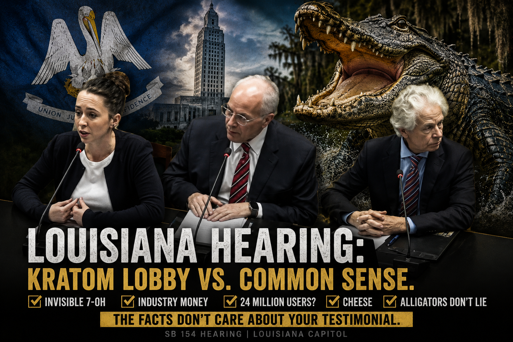
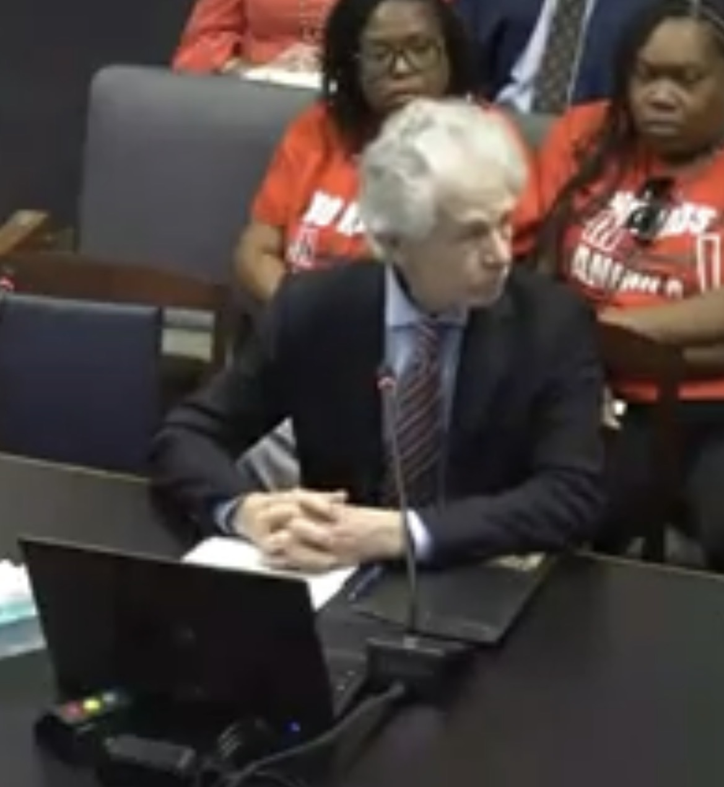
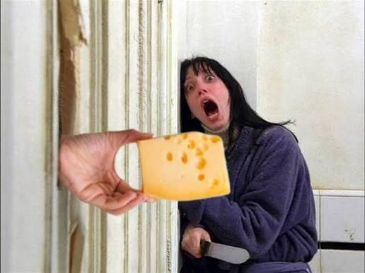

Louisiana's SB 154 hearing brought out the cavalry.
Lobbyists. Researchers. Retailers. Consumers.
They came with one remarkably consistent message:
Anything, apparently, except the kratom everyone had come to defend.
Then legislators started asking questions.
And things got considerably more entertaining.
▶ Watch the full hearing on YouTube
American Kratom Association representative Mac Haddow offered perhaps the day's most creative explanation for kratom-associated deaths.
He told lawmakers that synthetic 7-OH can disappear from the blood so quickly that medical examiners may not detect it. Instead, they find mitragynine.
So when toxicology points toward kratom, the real culprit may actually be something the toxicology didn't find.
That's quite an alibi.
Sen. Mark Abraham kept pressing until Haddow clarified that he wasn't claiming every death resulted from synthetic 7-OH.
Haddow assured lawmakers that the AKA supports strict regulation.
Unfortunately, the chairman had visited the AKA website.
He described following an AKA vendor link to Super Speciosa, where a pop-up offered free kratom despite Louisiana restrictions.
Haddow initially said there was no such link.
The chairman offered to put it on the screen.
Then the explanation became that AKA doesn't control its vendors' marketing.
Haddow promised action.

Dr. Jack Henningfield arrived with an impressive addiction-science résumé.
Then the chairman asked a beautifully uncomplicated question:
Henningfield initially explained that he receives a salary from Pinney Associates and doesn't work directly for the American Kratom Association.
The chairman kept asking.
Eventually:
There it is.
It took several questions, but the money eventually arrived.
Henningfield also cited a clinical study funded by Johnson Foods. The chairman immediately noticed the obvious: a kratom company had paid for a study of kratom that produced favorable evidence.
Dr. Kirsten Smith told lawmakers she didn't believe the families describing kratom addiction and harm were lying.
Then she suggested their experience was, nationally:
Her reasoning included the proposition that if kratom were causing widespread addiction, it probably would already have been federally scheduled.
Then the chairman asked whether Smith receives money connected to the kratom industry.
Smith disclosed that she consults for the International Plant & Herb Alliance for a fee and performs paid expert-witness work involving kratom, while emphasizing that her research itself isn't industry funded.
Global Kratom Coalition legislative director Walker Gman told lawmakers:
We've already taken that number apart in Open Truth: Garbage Evidence:
Then the Global Kratom Coalition walked into Louisiana and cited the resulting giant number.
One woman told lawmakers she'd taken five grams of kratom that morning and credited kratom with allowing her to stop antidepressants, anxiety medication and opioids. She'd been using it daily for more than a decade.
Another described going from largely bedridden or wheelchair-dependent to walking, returning to college and becoming a dog trainer. She also said she operates online communities totaling 26,000 members and works with more than 200 vendors.
Another announced:
Cured.
But one hell of a testimonial section.

One witness invoked casomorphins in cheese while discussing kratom's opioid pharmacology.
Near the end, a state addiction physician responded to the parade of therapeutic claims.
His conclusion was considerably less miraculous:
And there went most of the afternoon.
The evidentiary standard in Louisiana seemed to depend entirely on which direction the evidence pointed.
The committee advanced SB 154. Louisiana ultimately enacted Act 41, adding mitragynine and 7-hydroxymitragynine to Schedule I and making possession and distribution of kratom unlawful effective August 1, 2025.
The pro-kratom advocates had warned what would happen.
So how does the story end?
Louisiana became the seventh state to ban kratom statewide.
And now Louisiana families can rejoice knowing their neighborhood gas stations no longer double as retail outlets for foreign-sourced, opioid-receptor-active products. Louisiana law specifically prohibits ATC-licensed establishments from selling or even storing kratom products.